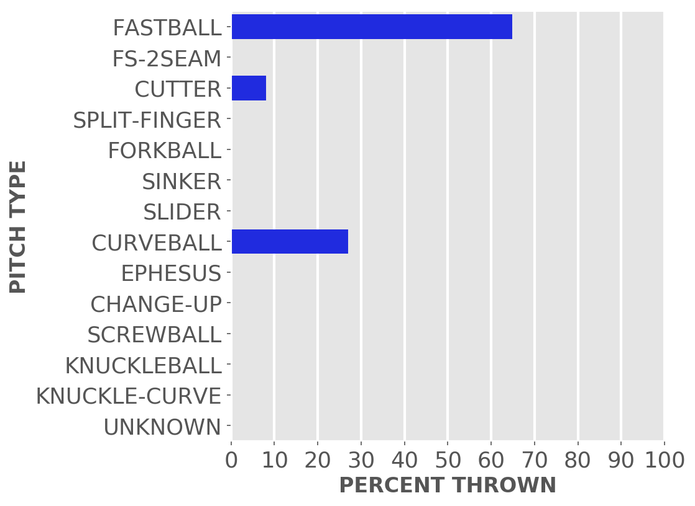
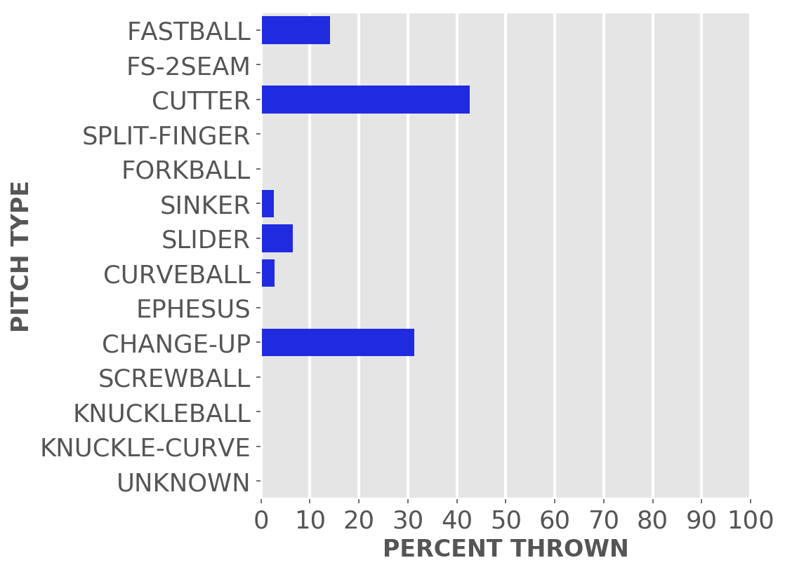
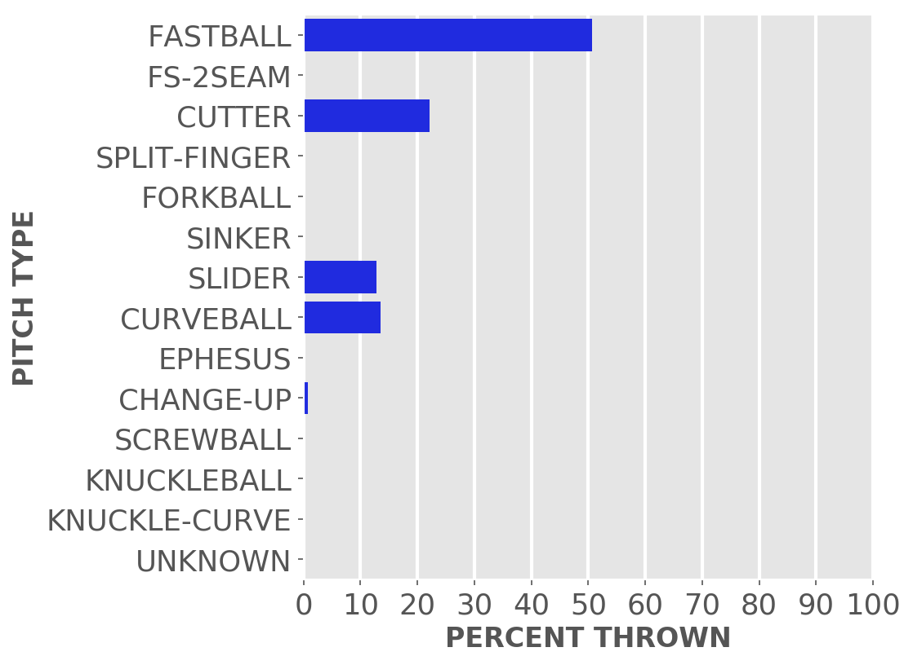
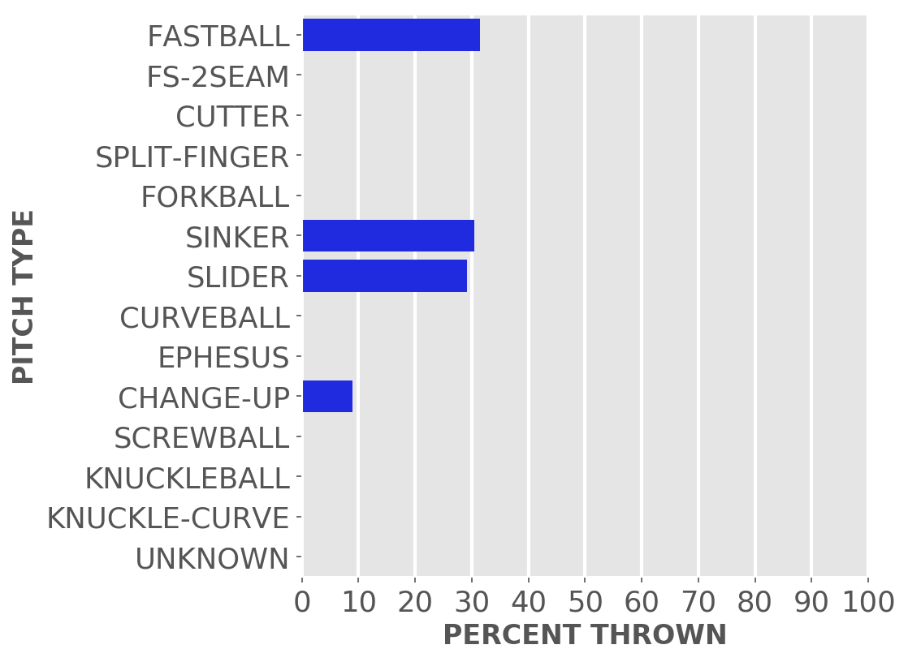

Chicago baseball
Cubs
A little-more-than-casual but not-very-wonky statistical look at the current season
Just enough stats to feed into the anxieties of your typical Cubby fan.
Updated Sunday, Aug. 21, at 2:31 p.m. Pybaseball gathers these from Baseball-reference.com.
Games
JUMP TO TOP | BATTERS | PITCHERS
On Saturday, Aug 20, the Cubs won with a walk-off in a day game at home against the Brewers, 6 to 5, in 11 innings. The winning pitcher was Uelmen, losing pitcher was Strzelecki. Save: None.
Next scheduled game: Sunday, Aug 21, a game at home with the Brewers.
Summary results by team
| Team | Wins | Loses | Avg. Cubs runs | Avg. runs against |
|---|---|---|---|---|
| Braves | 3 | 3 | 2.5 | 3.33 |
| Brewers | 9 | 6 | 4.47 | 4.67 |
| Cardinals | 4 | 7 | 3.82 | 5.36 |
| Diamondbacks | 3 | 4 | 4.0 | 4.57 |
| Dodgers | 0 | 7 | 2.86 | 6.29 |
| Giants | 1 | 3 | 2.5 | 3.75 |
| Marlins | 2 | 1 | 2.0 | 1.33 |
| Mets | 1 | 3 | 1.75 | 4.0 |
| Nationals | 4 | 2 | 4.83 | 3.83 |
| Orioles | 1 | 3 | 2.25 | 5.5 |
| Padres | 2 | 5 | 4.57 | 7.29 |
| Phillies | 3 | 0 | 8.33 | 2.33 |
| Pirates | 7 | 8 | 5.4 | 3.87 |
| Rays | 1 | 2 | 3.67 | 5.33 |
| Red Sox | 2 | 1 | 3.67 | 3.33 |
| Reds | 6 | 4 | 6.8 | 5.9 |
| Rockies | 2 | 2 | 5.5 | 5.25 |
| White Sox | 1 | 3 | 3.25 | 3.25 |
| Yankees | 0 | 3 | 1.67 | 9.33 |
Batters
JUMP TO TOP | GAMES | PITCHERS
Click the link under a player's name to get up-to-speed on a player at bat.
Willson Contreras #40, C
| Status (A = active) | A |
| Bats/Throws | R/R |
| Plate appearances | 443 |
| At bats | 376 |
| Hits | 94 |
| Home runs | 20 |
| Batting Avg. | 0.25 |

| Runs | 61 |
| RBI | 52 |
| On-base percent | 0.359 |
| Weighted OBP | 0.365 |
| Slugging % | 0.476 |
| Stolen bases | 4 |
| Caught stealing | 2 |
Other measures
| Weighted runs above avg. (wRAA) | 19.4 |
| Runs Above Replacement (RAR) | 31.2 |
| Fielding RAR | -1.7 |
| Wins above replacement (WAR) | 3.3 |
Yan Gomes #7, C
| Status (A = active) | A |
| Bats/Throws | R/R |
| Plate appearances | 203 |
| At bats | 194 |
| Hits | 45 |
| Home runs | 6 |
| Batting Avg. | 0.232 |

| Runs | 16 |
| RBI | 17 |
| On-base percent | 0.261 |
| Weighted OBP | 0.272 |
| Slugging % | 0.361 |
| Stolen bases | 0 |
| Caught stealing | 0 |
Other measures
| Weighted runs above avg. (wRAA) | -6.2 |
| Runs Above Replacement (RAR) | 3.1 |
| Fielding RAR | 2.7 |
| Wins above replacement (WAR) | 0.3 |
Ian Happ #8, LF
| Status (A = active) | A |
| Bats/Throws | S/R |
| Plate appearances | 477 |
| At bats | 423 |
| Hits | 118 |
| Home runs | 12 |
| Batting Avg. | 0.279 |

| Runs | 52 |
| RBI | 55 |
| On-base percent | 0.354 |
| Weighted OBP | 0.348 |
| Slugging % | 0.447 |
| Stolen bases | 7 |
| Caught stealing | 3 |
Other measures
| Weighted runs above avg. (wRAA) | 14.4 |
| Runs Above Replacement (RAR) | 25.3 |
| Fielding RAR | 1.8 |
| Wins above replacement (WAR) | 2.6 |
Jason Heyward #22, CF
| Status (A = active) | D10 |
| Bats/Throws | L/L |
| Plate appearances | 151 |
| At bats | 137 |
| Hits | 28 |
| Home runs | 1 |
| Batting Avg. | 0.204 |

| Runs | 15 |
| RBI | 10 |
| On-base percent | 0.278 |
| Weighted OBP | 0.254 |
| Slugging % | 0.277 |
| Stolen bases | 1 |
| Caught stealing | 0 |
Other measures
| Weighted runs above avg. (wRAA) | -6.8 |
| Runs Above Replacement (RAR) | -4.6 |
| Fielding RAR | -1.6 |
| Wins above replacement (WAR) | -0.5 |
P.J. Higgins #48, C
| Status (A = active) | A |
| Bats/Throws | R/R |
| Plate appearances | 130 |
| At bats | 116 |
| Hits | 30 |
| Home runs | 6 |
| Batting Avg. | 0.259 |

| Runs | 17 |
| RBI | 20 |
| On-base percent | 0.328 |
| Weighted OBP | 0.351 |
| Slugging % | 0.483 |
| Stolen bases | 0 |
| Caught stealing | 0 |
Other measures
| Weighted runs above avg. (wRAA) | 4.2 |
| Runs Above Replacement (RAR) | 3.0 |
| Fielding RAR | -4.5 |
| Wins above replacement (WAR) | 0.3 |
Nico Hoerner #2, SS
| Status (A = active) | A |
| Bats/Throws | R/R |
| Plate appearances | 397 |
| At bats | 368 |
| Hits | 109 |
| Home runs | 7 |
| Batting Avg. | 0.296 |

| Runs | 38 |
| RBI | 39 |
| On-base percent | 0.345 |
| Weighted OBP | 0.333 |
| Slugging % | 0.418 |
| Stolen bases | 14 |
| Caught stealing | 1 |
Other measures
| Weighted runs above avg. (wRAA) | 7.1 |
| Runs Above Replacement (RAR) | 33.6 |
| Fielding RAR | 8.4 |
| Wins above replacement (WAR) | 3.5 |
Nick Madrigal #1, 2B
| Status (A = active) | A |
| Bats/Throws | R/R |
| Plate appearances | 168 |
| At bats | 154 |
| Hits | 40 |
| Home runs | 0 |
| Batting Avg. | 0.26 |

| Runs | 17 |
| RBI | 5 |
| On-base percent | 0.313 |
| Weighted OBP | 0.275 |
| Slugging % | 0.292 |
| Stolen bases | 2 |
| Caught stealing | 0 |
Other measures
| Weighted runs above avg. (wRAA) | -4.7 |
| Runs Above Replacement (RAR) | 1.5 |
| Fielding RAR | 0.9 |
| Wins above replacement (WAR) | 0.2 |
Zach McKinstry #6, SS
| Status (A = active) | A |
| Bats/Throws | L/R |
| Plate appearances | 60 |
| At bats | 55 |
| Hits | 9 |
| Home runs | 1 |
| Batting Avg. | 0.164 |
| Runs | 6 |
| RBI | 2 |
| On-base percent | 0.233 |
| Weighted OBP | 0.222 |
| Slugging % | 0.255 |
| Stolen bases | 3 |
| Caught stealing | 0 |
Other measures
| Weighted runs above avg. (wRAA) | -4.2 |
| Runs Above Replacement (RAR) | -3.4 |
| Fielding RAR | -1.7 |
| Wins above replacement (WAR) | -0.4 |
Christopher Morel #5, CF
| Status (A = active) | A |
| Bats/Throws | R/R |
| Plate appearances | 311 |
| At bats | 279 |
| Hits | 72 |
| Home runs | 12 |
| Batting Avg. | 0.258 |

| Runs | 47 |
| RBI | 34 |
| On-base percent | 0.326 |
| Weighted OBP | 0.341 |
| Slugging % | 0.462 |
| Stolen bases | 9 |
| Caught stealing | 6 |
Other measures
| Weighted runs above avg. (wRAA) | 7.6 |
| Runs Above Replacement (RAR) | 14.8 |
| Fielding RAR | -4.3 |
| Wins above replacement (WAR) | 1.6 |
Rafael Ortega #66, CF
| Status (A = active) | A |
| Bats/Throws | L/R |
| Plate appearances | 323 |
| At bats | 274 |
| Hits | 63 |
| Home runs | 6 |
| Batting Avg. | 0.23 |

| Runs | 30 |
| RBI | 27 |
| On-base percent | 0.324 |
| Weighted OBP | 0.3 |
| Slugging % | 0.35 |
| Stolen bases | 9 |
| Caught stealing | 7 |
Other measures
| Weighted runs above avg. (wRAA) | -2.5 |
| Runs Above Replacement (RAR) | 3.9 |
| Fielding RAR | 3.5 |
| Wins above replacement (WAR) | 0.4 |
Franmil Reyes #32, RF
| Status (A = active) | A |
| Bats/Throws | R/R |
| Plate appearances | 323 |
| At bats | 304 |
| Hits | 70 |
| Home runs | 11 |
| Batting Avg. | 0.23 |
| Runs | 29 |
| RBI | 35 |
| On-base percent | 0.266 |
| Weighted OBP | 0.285 |
| Slugging % | 0.391 |
| Stolen bases | 2 |
| Caught stealing | 0 |
Other measures
| Weighted runs above avg. (wRAA) | -6.5 |
| Runs Above Replacement (RAR) | -4.7 |
| Fielding RAR | -1.0 |
| Wins above replacement (WAR) | -0.5 |
Seiya Suzuki #27, RF
| Status (A = active) | A |
| Bats/Throws | R/R |
| Plate appearances | 321 |
| At bats | 286 |
| Hits | 69 |
| Home runs | 9 |
| Batting Avg. | 0.241 |

| Runs | 37 |
| RBI | 37 |
| On-base percent | 0.315 |
| Weighted OBP | 0.312 |
| Slugging % | 0.402 |
| Stolen bases | 7 |
| Caught stealing | 3 |
Other measures
| Weighted runs above avg. (wRAA) | 0.5 |
| Runs Above Replacement (RAR) | 3.7 |
| Fielding RAR | -2.5 |
| Wins above replacement (WAR) | 0.4 |
Nelson Velazquez #4, RF
| Status (A = active) | A |
| Bats/Throws | R/R |
| Plate appearances | 126 |
| At bats | 115 |
| Hits | 27 |
| Home runs | 6 |
| Batting Avg. | 0.235 |
| Runs | 16 |
| RBI | 18 |
| On-base percent | 0.302 |
| Weighted OBP | 0.324 |
| Slugging % | 0.443 |
| Stolen bases | 3 |
| Caught stealing | 1 |
Other measures
| Weighted runs above avg. (wRAA) | 1.4 |
| Runs Above Replacement (RAR) | 3.9 |
| Fielding RAR | -0.2 |
| Wins above replacement (WAR) | 0.4 |
Patrick Wisdom #16, 3B
| Status (A = active) | A |
| Bats/Throws | R/R |
| Plate appearances | 460 |
| At bats | 401 |
| Hits | 88 |
| Home runs | 22 |
| Batting Avg. | 0.219 |

| Runs | 59 |
| RBI | 58 |
| On-base percent | 0.314 |
| Weighted OBP | 0.33 |
| Slugging % | 0.444 |
| Stolen bases | 7 |
| Caught stealing | 4 |
Other measures
| Weighted runs above avg. (wRAA) | 7.2 |
| Runs Above Replacement (RAR) | 11.7 |
| Fielding RAR | -8.3 |
| Wins above replacement (WAR) | 1.2 |
Pitchers
Click the link under a player's name to get acquainted with who's on the mound.Click here for a description of these stats and more.
Steven Brault #25, P
| Status (A = active) | A |
| Bats/Throws | L/L |
| Wins | 0 |
| Losses | 0 |
| ERA | 0.0 |
| Caught stealing | 0 |
| Complete games | 0 |
| Shutouts | 0 |
| Saves | 0 |
| Blown saves | 1 |
Pitch types
Fastball = Four Seam and Unclassified Fastballs; FS-2seam = Two Seam Fastballs; Ephesuses are a really slow ball
| Average innings pitched | 1.1 |
| Strikeouts per 9 innings | 8.0 |
| Walks per 9 innings | 4.0 |
| Walks, hits per inning (WHIP) | 1.11 |
| Percent left on base | 90.9 |
| Percent first pitch strike | 44.4 |
Other measures
| Avg. run support | 5.0 |
| Opponents batting average | 0.194 |
| Batting avg. on balls in play | 0.261 |
| Fielding independent pitching | 3.01 |
| Win probability added (WPA) | 0.33 |
| Runs above replacement | 1.4 |
| WAR | 0.1 |
Kervin Castro #74, P
| Status (A = active) | A |
| Bats/Throws | R/R |
| Wins | 0 |
| Losses | 1 |
| ERA | 12.27 |
| Caught stealing | 0 |
| Complete games | 0 |
| Shutouts | 0 |
| Saves | 0 |
| Blown saves | 0 |
Pitch types
Fastball = Four Seam and Unclassified Fastballs; FS-2seam = Two Seam Fastballs; Ephesuses are a really slow ball
| Average innings pitched | 1.2 |
| Strikeouts per 9 innings | 7.36 |
| Walks per 9 innings | 6.14 |
| Walks, hits per inning (WHIP) | 2.05 |
| Percent left on base | 36.8 |
| Percent first pitch strike | 63.9 |
Other measures
| Avg. run support | 2.0 |
| Opponents batting average | 0.323 |
| Batting avg. on balls in play | 0.375 |
| Fielding independent pitching | 5.3 |
| Win probability added (WPA) | -0.39 |
| Runs above replacement | -1.0 |
| WAR | -0.1 |
Anderson Espinoza #51, P
| Status (A = active) | A |
| Bats/Throws | R/R |
| Wins | 0 |
| Losses | 2 |
| ERA | 4.11 |
| Caught stealing | 0 |
| Complete games | 0 |
| Shutouts | 0 |
| Saves | 0 |
| Blown saves | 0 |
Pitch types

Fastball = Four Seam and Unclassified Fastballs; FS-2seam = Two Seam Fastballs; Ephesuses are a really slow ball
| Average innings pitched | 2.5 |
| Strikeouts per 9 innings | 8.8 |
| Walks per 9 innings | 7.63 |
| Walks, hits per inning (WHIP) | 1.5 |
| Percent left on base | 86.5 |
| Percent first pitch strike | 41.2 |
Other measures
| Avg. run support | 4.0 |
| Opponents batting average | 0.189 |
| Batting avg. on balls in play | 0.2 |
| Fielding independent pitching | 6.64 |
| Win probability added (WPA) | 0.06 |
| Runs above replacement | -3.7 |
| WAR | -0.4 |
Kyle Hendricks #28, P
| Status (A = active) | D15 |
| Bats/Throws | R/R |
| Wins | 4 |
| Losses | 6 |
| ERA | 4.8 |
| Caught stealing | 16 |
| Complete games | 0 |
| Shutouts | 0 |
| Saves | 0 |
| Blown saves | 0 |
Pitch types

Fastball = Four Seam and Unclassified Fastballs; FS-2seam = Two Seam Fastballs; Ephesuses are a really slow ball
| Average innings pitched | 5.3 |
| Strikeouts per 9 innings | 7.04 |
| Walks per 9 innings | 2.56 |
| Walks, hits per inning (WHIP) | 1.29 |
| Percent left on base | 73.6 |
| Percent first pitch strike | 62.9 |
Other measures
| Avg. run support | 60.0 |
| Opponents batting average | 0.258 |
| Batting avg. on balls in play | 0.282 |
| Fielding independent pitching | 4.83 |
| Win probability added (WPA) | -0.71 |
| Runs above replacement | 3.8 |
| WAR | 0.4 |
Brandon Hughes #47, P
| Status (A = active) | A |
| Bats/Throws | S/L |
| Wins | 2 |
| Losses | 1 |
| ERA | 2.95 |
| Caught stealing | 0 |
| Complete games | 0 |
| Shutouts | 0 |
| Saves | 2 |
| Blown saves | 2 |
Pitch types

Fastball = Four Seam and Unclassified Fastballs; FS-2seam = Two Seam Fastballs; Ephesuses are a really slow ball
| Average innings pitched | 1.1 |
| Strikeouts per 9 innings | 11.12 |
| Walks per 9 innings | 2.95 |
| Walks, hits per inning (WHIP) | 1.03 |
| Percent left on base | 82.9 |
| Percent first pitch strike | 65.9 |
Other measures
| Avg. run support | 10.0 |
| Opponents batting average | 0.193 |
| Batting avg. on balls in play | 0.244 |
| Fielding independent pitching | 4.06 |
| Win probability added (WPA) | 1.1 |
| Runs above replacement | 0.9 |
| WAR | 0.1 |
Wade Miley #20, P
| Status (A = active) | D15 |
| Bats/Throws | L/L |
| Wins | 1 |
| Losses | 0 |
| ERA | 2.84 |
| Caught stealing | 4 |
| Complete games | 0 |
| Shutouts | 0 |
| Saves | 0 |
| Blown saves | 0 |
Pitch types
Fastball = Four Seam and Unclassified Fastballs; FS-2seam = Two Seam Fastballs; Ephesuses are a really slow ball
| Average innings pitched | 4.8 |
| Strikeouts per 9 innings | 5.68 |
| Walks per 9 innings | 3.79 |
| Walks, hits per inning (WHIP) | 1.21 |
| Percent left on base | 75.0 |
| Percent first pitch strike | 62.0 |
Other measures
| Avg. run support | 14.0 |
| Opponents batting average | 0.214 |
| Batting avg. on balls in play | 0.259 |
| Fielding independent pitching | 3.28 |
| Win probability added (WPA) | -0.03 |
| Runs above replacement | 4.1 |
| WAR | 0.4 |
Alec Mills #30, P
| Status (A = active) | D15 |
| Bats/Throws | R/R |
| Wins | 0 |
| Losses | 1 |
| ERA | 9.68 |
| Caught stealing | 2 |
| Complete games | 0 |
| Shutouts | 0 |
| Saves | 0 |
| Blown saves | 0 |
Pitch types

Fastball = Four Seam and Unclassified Fastballs; FS-2seam = Two Seam Fastballs; Ephesuses are a really slow ball
| Average innings pitched | 2.5 |
| Strikeouts per 9 innings | 5.6 |
| Walks per 9 innings | 1.53 |
| Walks, hits per inning (WHIP) | 1.75 |
| Percent left on base | 57.9 |
| Percent first pitch strike | 69.0 |
Other measures
| Avg. run support | 7.0 |
| Opponents batting average | 0.359 |
| Batting avg. on balls in play | 0.35 |
| Fielding independent pitching | 8.05 |
| Win probability added (WPA) | -0.52 |
| Runs above replacement | -5.9 |
| WAR | -0.6 |
Sean Newcomb #15, P
| Status (A = active) | A |
| Bats/Throws | L/L |
| Wins | 1 |
| Losses | 0 |
| ERA | 7.79 |
| Caught stealing | 1 |
| Complete games | 0 |
| Shutouts | 0 |
| Saves | 0 |
| Blown saves | 0 |
Pitch types

Fastball = Four Seam and Unclassified Fastballs; FS-2seam = Two Seam Fastballs; Ephesuses are a really slow ball
| Average innings pitched | 1.4 |
| Strikeouts per 9 innings | 9.35 |
| Walks per 9 innings | 6.75 |
| Walks, hits per inning (WHIP) | 2.02 |
| Percent left on base | 61.7 |
| Percent first pitch strike | 50.0 |
Other measures
| Avg. run support | 17.0 |
| Opponents batting average | 0.301 |
| Batting avg. on balls in play | 0.365 |
| Fielding independent pitching | 5.55 |
| Win probability added (WPA) | 0.16 |
| Runs above replacement | -1.9 |
| WAR | -0.2 |
Michael Rucker #59, P
| Status (A = active) | A |
| Bats/Throws | R/R |
| Wins | 2 |
| Losses | 1 |
| ERA | 4.33 |
| Caught stealing | 0 |
| Complete games | 0 |
| Shutouts | 0 |
| Saves | 0 |
| Blown saves | 0 |
Pitch types

Fastball = Four Seam and Unclassified Fastballs; FS-2seam = Two Seam Fastballs; Ephesuses are a really slow ball
| Average innings pitched | 1.4 |
| Strikeouts per 9 innings | 7.9 |
| Walks per 9 innings | 3.06 |
| Walks, hits per inning (WHIP) | 1.3 |
| Percent left on base | 67.0 |
| Percent first pitch strike | 58.7 |
Other measures
| Avg. run support | 12.0 |
| Opponents batting average | 0.246 |
| Batting avg. on balls in play | 0.298 |
| Fielding independent pitching | 3.49 |
| Win probability added (WPA) | -0.5 |
| Runs above replacement | 3.2 |
| WAR | 0.3 |
Adrian Sampson #41, P
| Status (A = active) | A |
| Bats/Throws | R/R |
| Wins | 1 |
| Losses | 3 |
| ERA | 3.51 |
| Caught stealing | 10 |
| Complete games | 0 |
| Shutouts | 0 |
| Saves | 0 |
| Blown saves | 0 |
Pitch types

Fastball = Four Seam and Unclassified Fastballs; FS-2seam = Two Seam Fastballs; Ephesuses are a really slow ball
| Average innings pitched | 4.9 |
| Strikeouts per 9 innings | 7.32 |
| Walks per 9 innings | 2.44 |
| Walks, hits per inning (WHIP) | 1.25 |
| Percent left on base | 72.1 |
| Percent first pitch strike | 56.9 |
Other measures
| Avg. run support | 13.0 |
| Opponents batting average | 0.251 |
| Batting avg. on balls in play | 0.298 |
| Fielding independent pitching | 3.46 |
| Win probability added (WPA) | -0.13 |
| Runs above replacement | 9.9 |
| WAR | 1.1 |
Drew Smyly #11, P
| Status (A = active) | A |
| Bats/Throws | L/L |
| Wins | 5 |
| Losses | 6 |
| ERA | 3.67 |
| Caught stealing | 16 |
| Complete games | 0 |
| Shutouts | 0 |
| Saves | 0 |
| Blown saves | 0 |
Pitch types

Fastball = Four Seam and Unclassified Fastballs; FS-2seam = Two Seam Fastballs; Ephesuses are a really slow ball
| Average innings pitched | 4.8 |
| Strikeouts per 9 innings | 7.7 |
| Walks per 9 innings | 2.01 |
| Walks, hits per inning (WHIP) | 1.25 |
| Percent left on base | 77.8 |
| Percent first pitch strike | 70.3 |
Other measures
| Avg. run support | 42.0 |
| Opponents batting average | 0.258 |
| Batting avg. on balls in play | 0.296 |
| Fielding independent pitching | 4.12 |
| Win probability added (WPA) | 0.51 |
| Runs above replacement | 10.3 |
| WAR | 1.1 |
Justin Steele #35, P
| Status (A = active) | A |
| Bats/Throws | L/L |
| Wins | 4 |
| Losses | 7 |
| ERA | 3.43 |
| Caught stealing | 22 |
| Complete games | 0 |
| Shutouts | 0 |
| Saves | 0 |
| Blown saves | 0 |
Pitch types

Fastball = Four Seam and Unclassified Fastballs; FS-2seam = Two Seam Fastballs; Ephesuses are a really slow ball
| Average innings pitched | 4.9 |
| Strikeouts per 9 innings | 9.28 |
| Walks per 9 innings | 3.76 |
| Walks, hits per inning (WHIP) | 1.39 |
| Percent left on base | 70.5 |
| Percent first pitch strike | 59.8 |
Other measures
| Avg. run support | 53.0 |
| Opponents batting average | 0.249 |
| Batting avg. on balls in play | 0.322 |
| Fielding independent pitching | 3.24 |
| Win probability added (WPA) | 0.29 |
| Runs above replacement | 21.9 |
| WAR | 2.4 |
Marcus Stroman #0, P
| Status (A = active) | A |
| Bats/Throws | R/R |
| Wins | 3 |
| Losses | 5 |
| ERA | 3.83 |
| Caught stealing | 17 |
| Complete games | 0 |
| Shutouts | 0 |
| Saves | 0 |
| Blown saves | 0 |
Pitch types

Fastball = Four Seam and Unclassified Fastballs; FS-2seam = Two Seam Fastballs; Ephesuses are a really slow ball
| Average innings pitched | 5.4 |
| Strikeouts per 9 innings | 8.15 |
| Walks per 9 innings | 2.45 |
| Walks, hits per inning (WHIP) | 1.15 |
| Percent left on base | 66.9 |
| Percent first pitch strike | 64.7 |
Other measures
| Avg. run support | 41.0 |
| Opponents batting average | 0.229 |
| Batting avg. on balls in play | 0.268 |
| Fielding independent pitching | 3.83 |
| Win probability added (WPA) | 0.39 |
| Runs above replacement | 12.3 |
| WAR | 1.3 |
Keegan Thompson #71, P
| Status (A = active) | D15 |
| Bats/Throws | R/R |
| Wins | 9 |
| Losses | 5 |
| ERA | 3.97 |
| Caught stealing | 17 |
| Complete games | 0 |
| Shutouts | 0 |
| Saves | 0 |
| Blown saves | 0 |
Pitch types
Fastball = Four Seam and Unclassified Fastballs; FS-2seam = Two Seam Fastballs; Ephesuses are a really slow ball
| Average innings pitched | 4.2 |
| Strikeouts per 9 innings | 7.85 |
| Walks per 9 innings | 3.19 |
| Walks, hits per inning (WHIP) | 1.31 |
| Percent left on base | 75.2 |
| Percent first pitch strike | 57.9 |
Other measures
| Avg. run support | 56.0 |
| Opponents batting average | 0.251 |
| Batting avg. on balls in play | 0.291 |
| Fielding independent pitching | 4.57 |
| Win probability added (WPA) | 0.27 |
| Runs above replacement | 6.4 |
| WAR | 0.7 |
Erich Uelmen #46, P
| Status (A = active) | A |
| Bats/Throws | R/R |
| Wins | 2 |
| Losses | 1 |
| ERA | 2.77 |
| Caught stealing | 0 |
| Complete games | 0 |
| Shutouts | 0 |
| Saves | 0 |
| Blown saves | 1 |
Pitch types
Fastball = Four Seam and Unclassified Fastballs; FS-2seam = Two Seam Fastballs; Ephesuses are a really slow ball
| Average innings pitched | 1.2 |
| Strikeouts per 9 innings | 8.31 |
| Walks per 9 innings | 3.46 |
| Walks, hits per inning (WHIP) | 1.23 |
| Percent left on base | 79.5 |
| Percent first pitch strike | 63.8 |
Other measures
| Avg. run support | 11.0 |
| Opponents batting average | 0.22 |
| Batting avg. on balls in play | 0.27 |
| Fielding independent pitching | 4.12 |
| Win probability added (WPA) | -0.43 |
| Runs above replacement | 0.2 |
| WAR | 0.0 |
Rowan Wick #50, P
| Status (A = active) | A |
| Bats/Throws | L/R |
| Wins | 3 |
| Losses | 5 |
| ERA | 4.29 |
| Caught stealing | 0 |
| Complete games | 0 |
| Shutouts | 0 |
| Saves | 8 |
| Blown saves | 4 |
Pitch types

Fastball = Four Seam and Unclassified Fastballs; FS-2seam = Two Seam Fastballs; Ephesuses are a really slow ball
| Average innings pitched | 1.0 |
| Strikeouts per 9 innings | 9.12 |
| Walks per 9 innings | 3.93 |
| Walks, hits per inning (WHIP) | 1.69 |
| Percent left on base | 73.5 |
| Percent first pitch strike | 58.3 |
Other measures
| Avg. run support | 22.0 |
| Opponents batting average | 0.304 |
| Batting avg. on balls in play | 0.376 |
| Fielding independent pitching | 4.27 |
| Win probability added (WPA) | -0.46 |
| Runs above replacement | -0.5 |
| WAR | -0.1 |
JUMP TO TOP